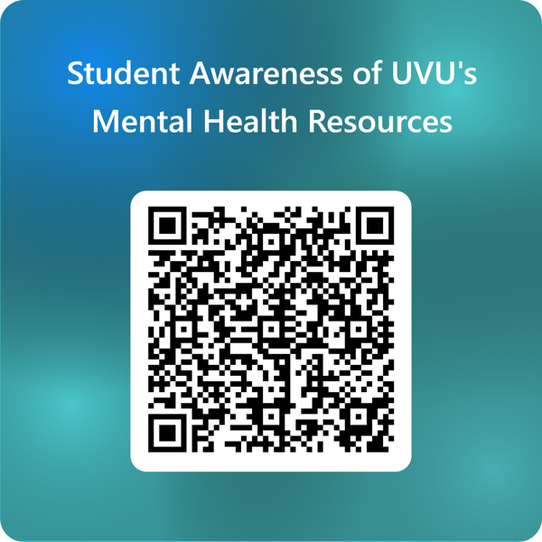

Hey Wolverines! College gets heavy sometimes. We pulled together the real, publicly listed support options on campus and around Utah County so you don't have to go digging when you need them.
If you're thinking about hurting yourself or someone else, or you just need help right now, start here.
Stuff you get as a UVU student. Use it!
For after hours, when campus is full, or if you'd rather go local.
Everyday habits lots of students find helpful. They're not a replacement for real care.
Got two minutes? Tell us what you know about campus mental health resources. It helps us make this guide better.
Take our 2-minute student awareness survey
Scan the QR code or tap the button.